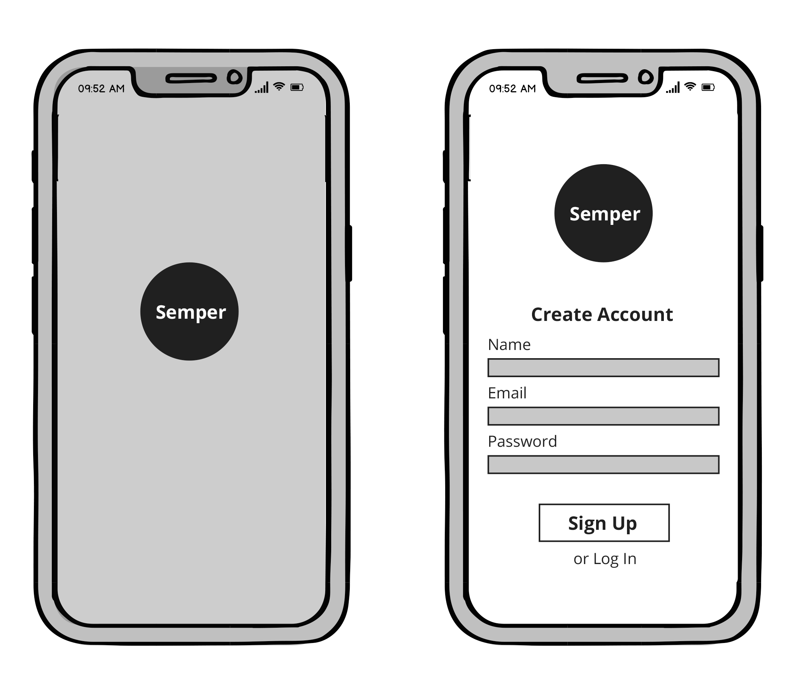
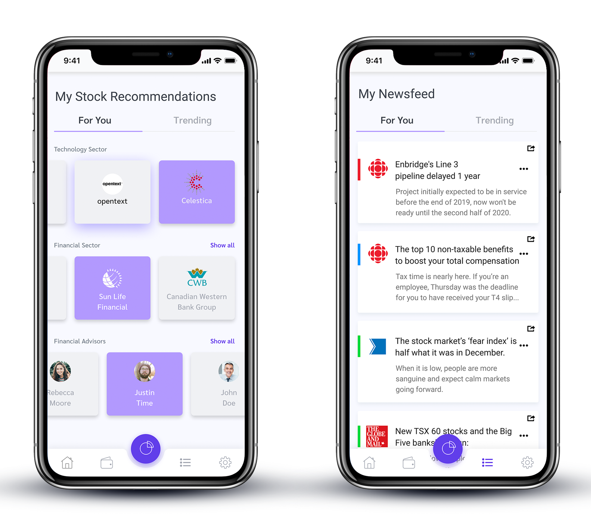
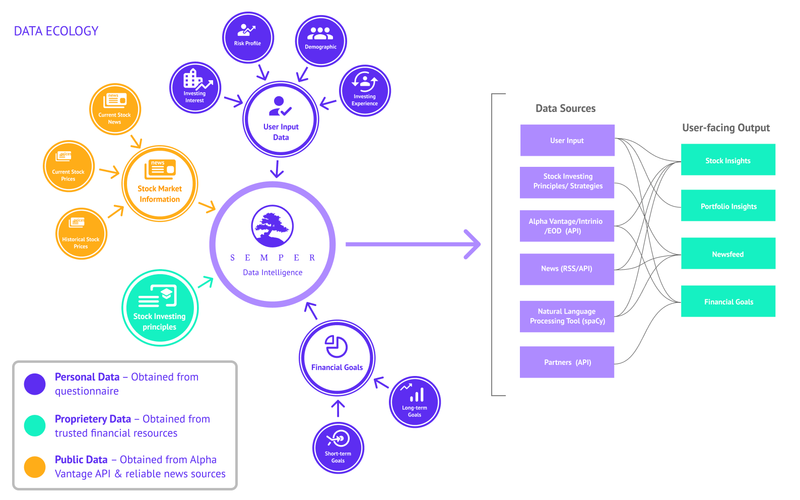

SEMPER
Venture Type: FinTech
Semper - Interactive Prototype
The Problem:
According to RBC, 6 in 10 millennials don't know enough about investing.
In addition, 57% of millennials who don't invest cite worries of losing money as one of their major reasons.
Target User:
• Millennials (anyone born between 1981 and 1996)The Solution:
Semper is a digital financial advisor platform that provides personalized investing recommendations to make it easier for millennials to invest based on their risk profile, historical stock market data, and financial goals.
Key Features:
• Portfolio recommendations
• Stock recommendations
• Financial goals (with third-party API integration)
• Chatbot/Financial advisor referral
• Curated newsfeed based on stocks/portfolio
My Role
In a team of four, I acted as the product manager to research and determine the viability of our product. Along with our team's UX Designer, I designed early-stage sketches as well as the high-fidelity designs seen below. I also created the interactive prototype using Adobe XD to demonstrate the MVP concept.
Furthermore, I was responsible for determining what third-party data sources were available and could be implemented into our platform from a technical perspective.
Early-Stage Sketches
High-Fidelity Designs

Semper would use supervised learning to suggest portfolios and stocks based on users’ investing profiles, historical as well as current trends in the stock market.
Data Sources
References:
MISSING OUT
Millennials and the Markets by Ontario Securities Commission
- Sketch
- Figma
- Adobe Photoshop
- Adobe XD